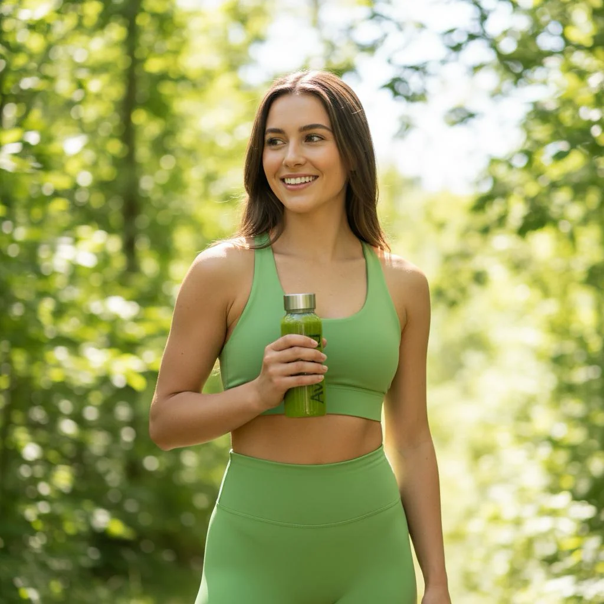
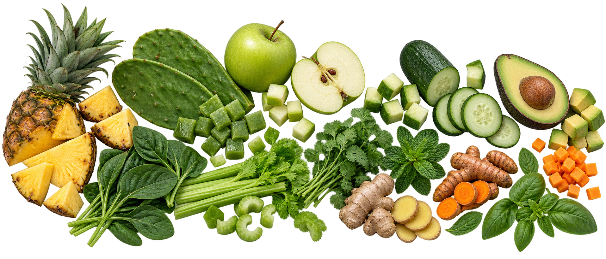
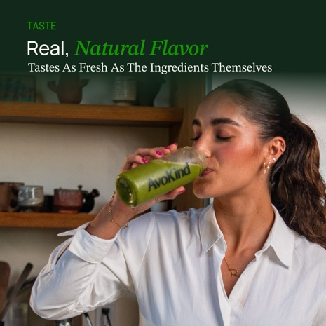

Why Green Boost
Twelve foods.
Thirty seconds.
Nothing mysterious.
Fruits, vegetables, herbs and roots you can actually name — freeze-dried into a smoothie mix that fits before class, between calls, or on the way out the door.

What is actually in it
You can point to every ingredient.
Pineapple. Nopal. Apple. Cucumber. Avocado. Spinach. Celery. Cilantro. Ginger. Turmeric. Mint. Basil. No proprietary blend name in the way.


What it tastes like
Fruit first.
Greens after.
Pineapple and green apple come through first. Then fresh greens, creamy avocado, herbs, ginger and turmeric. It is not candy-sweet and it is not pretending to be dessert.
Read taste reviewsWhy avocado?
Because it makes the formula make sense.
Avocado brings natural creaminess and whole-food fat. That helps the drink feel smoother, and dietary fat has a real role in the way the body handles fat-soluble nutrients from foods.

Want the nerdy version?
We will show our work.
The simple story comes first. The evidence is here when you want to inspect it.
Why is avocado in the formula?
Avocado contributes texture and whole-food fat. Human meal studies support the general mechanism that dietary fat can improve absorption of some fat-soluble carotenoids. That explains the formulation logic; it does not turn Green Boost into a treatment claim.
What does freeze-drying actually mean?
Freeze-drying is low-temperature dehydration under reduced pressure. It is different from high-heat drying, but exact nutrient-retention percentages depend on the food, process and storage conditions.
Why are we not using a “proprietary blend”?
Because you should be able to read the ingredient list and know what you are buying. The current formula is twelve named whole-food ingredients.